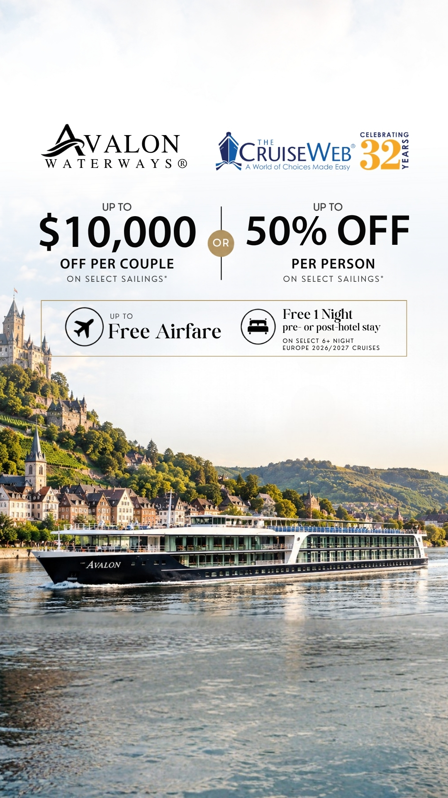
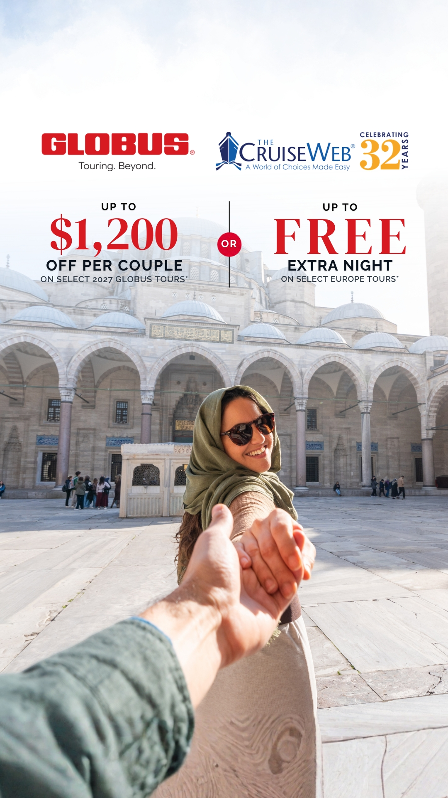
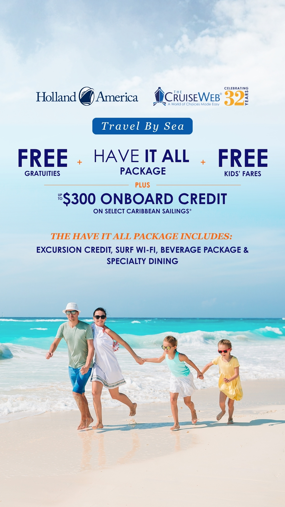
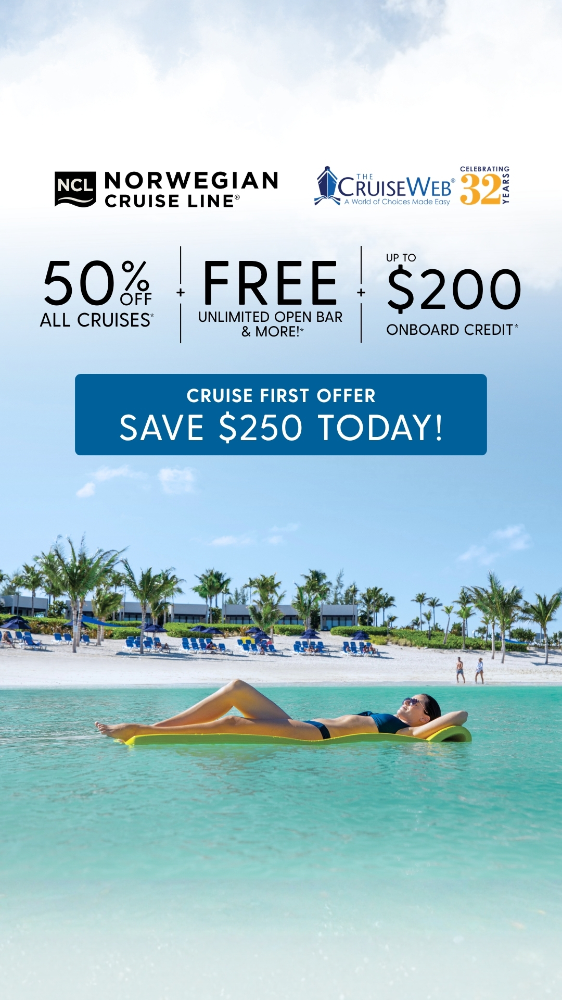
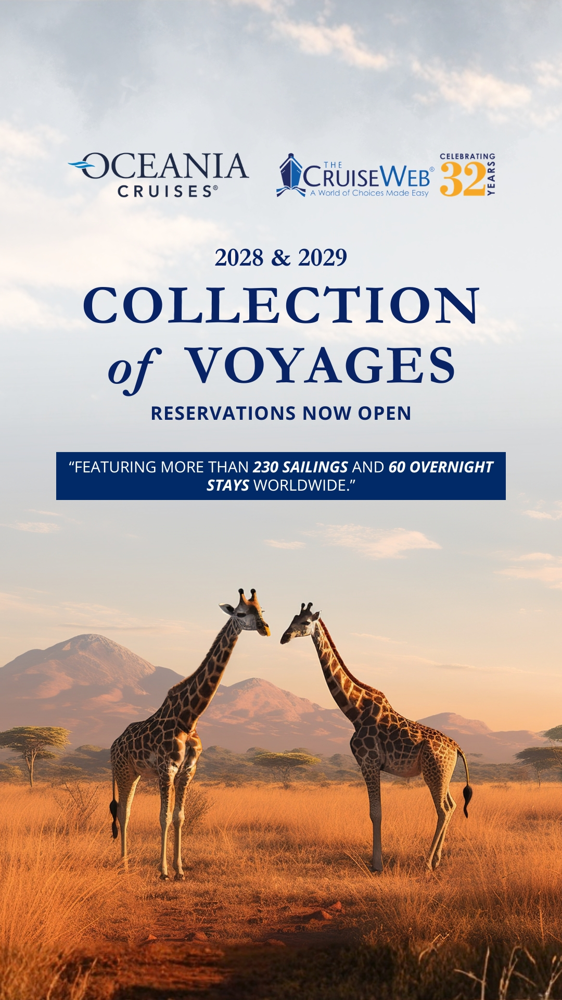
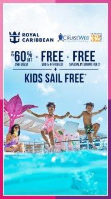
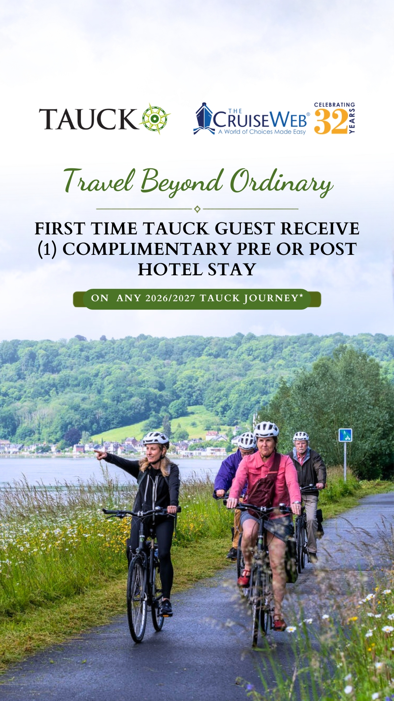

Work folder — Social Media Graphics
Social Media Graphics — Stories
This is the Social Media Graphics folder. Inside it: eight story-format graphics, each designed for a cruise or tour brand and co-branded with The Cruise Web. Each graphic is shown in full at its correct 9:16 story proportions — nothing is cropped — and most are 1080 × 1920 px.

Celebrity Cruises — Spring Sale Story
Social media story graphic (1080 × 1920) for Celebrity Cruises with The Cruise Web: Spring Sale limited-time offer — 75% off 2nd guest, up to $650 bonus savings, plus free 3rd/4th/5th guest.

Avalon Waterways — Savings Story
Social media story graphic (1080 × 1920) for Avalon Waterways with The Cruise Web: up to $10,000 off per couple or up to 50% off per person on select sailings, up to free airfare, plus a free 1-night pre- or post-hotel stay on select 6+ night Europe 2026/2027 cruises.

Globus — Tours Offer Story
Social media story graphic (1080 × 1920) for Globus with The Cruise Web: up to $1,200 off per couple on select 2027 Globus tours, or a free extra night on select Europe tours.

Holland America — Travel By Sea Story
Social media story graphic (1080 × 1920) for Holland America with The Cruise Web: Travel By Sea offer — free gratuities, the Have It All package, free kids' fares, plus up to $300 onboard credit on select Caribbean sailings.

Norwegian Cruise Line — 50% Off Story
Social media story graphic (1080 × 1920) for Norwegian Cruise Line with The Cruise Web: 50% off all cruises, free unlimited open bar and more, up to $200 onboard credit, plus a Cruise First offer to save $250.

Oceania Cruises — Collection of Voyages Story
Social media story graphic (1080 × 1920) for Oceania Cruises with The Cruise Web: 2028 & 2029 Collection of Voyages, reservations now open — featuring more than 230 sailings and 60 overnight stays worldwide.

Royal Caribbean — Kids Sail Free Story
Social media story graphic for Royal Caribbean with The Cruise Web: up to 60% off 2nd guest, free 3rd & 4th guest, free specialty dining for 2, plus Kids Sail Free. (file as provided: 187×333, low resolution)

Tauck — Travel Beyond Ordinary Story
Social media story graphic (1080 × 1920) for Tauck with The Cruise Web: Travel Beyond Ordinary — first-time Tauck guests receive one complimentary pre- or post-hotel stay on any 2026/2027 Tauck journey.